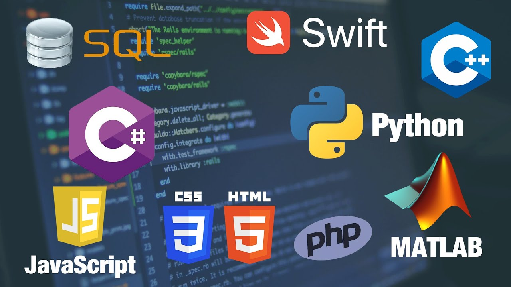

Los 3 mejores lenguajes de programación blockchain

Como puede ser fácil perderse en estas aguas, en este artículo te contamos cuales son los 3 lenguajes más útiles y eficientes para desarrollar smart contracts..
La tecnología blockchain está creciendo y evolucionando cada vez más y el motivo es la capacidad de esta tecnología para resolver problemas con los que las empresas se encuentran hoy en día, como las brechas de seguridad o el desperdicio de recursos de todo tipo (personales, temporales y económicos) en sus actividades. Por eso están surgiendo lenguajes que permiten desarrollar software sobre tecnología blockchain.
Como puede ser fácil perderse en estas aguas, en este artículo te contamos cuales son los 3 lenguajes más útiles y eficientes para desarrollar smart contracts.